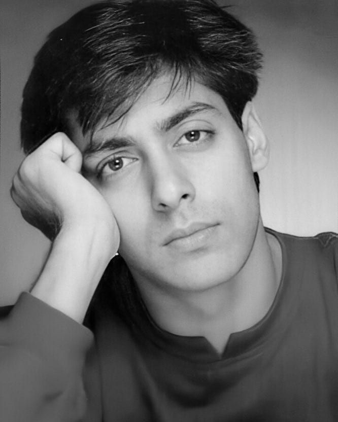

From a young debutant to one of Bollywood's most enduring superstars — a look at the man behind the movies.

Salman Khan made his acting debut in the late 1980s and quickly became one of the most recognisable faces in Hindi cinema. Over three decades, he's moved between romance, drama, and full-throttle action, building a filmography that spans some of Bollywood's highest-grossing releases.
Beyond the screen, he founded the Being Human charitable trust, channeling a portion of merchandise and brand proceeds into healthcare and education initiatives. On television, he has long hosted Bigg Boss, one of Indian TV's biggest reality formats, adding another layer to his public presence outside films.
This page — and this whole site — is an unofficial, fan-made tribute: a visual archive of the movies, moments, and dialogues that have defined his career.
A few of the numbers behind three decades in the spotlight.
Key chapters from debut to present day.
Started his acting career with a supporting role, stepping into an industry he'd go on to define for decades.
A lead role in a major romantic hit turned him into a household name almost overnight.
Founded the Being Human charitable trust, tying merchandise and brand work to healthcare and education causes.
A run of high-octane action hits reshaped his on-screen image and set the template for the decade ahead.
Took over hosting duties on Bigg Boss, becoming a fixture of Indian television alongside his film work.
One of his most acclaimed performances, blending emotion with mass appeal to major box-office and critical success.
His current project — a war drama based on the 2020 Galwan Valley clash, in which he plays a patriotic army officer.